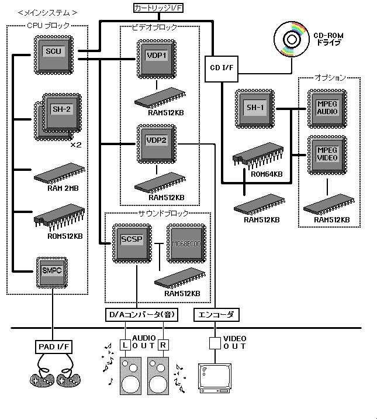

★HARDWARE Manual
★セガサターン概要マニュアル
★HARDWARE Manual
★セガサターン概要マニュアル
CPUブロック | CPU | SH-2×2 |
RAM | 2MB | |
ROM | 512KB | |
SCU | DMA 2ch | |
SMPC | RTC 1MHz（精度） | |
ビデオブロック | VDP1 | 最大40万画素 1/60秒の転送 |
VDP2 | 画面解像度 横320ドット×縦224ドット 等 | |
RAM | VDP1用 512KB | |
サウンドブロック | SCSP | PCM32ch 最大44.1KHz |
RAM | 512KB | |
CPU | MC68EC000 |
CPU | SH-1 |
RAM | 512KB |
MPEG AUDIO/VIDEO | RAM 512KB |
図2.1 ブロック図

★HARDWARE Manual
★セガサターン概要マニュアル